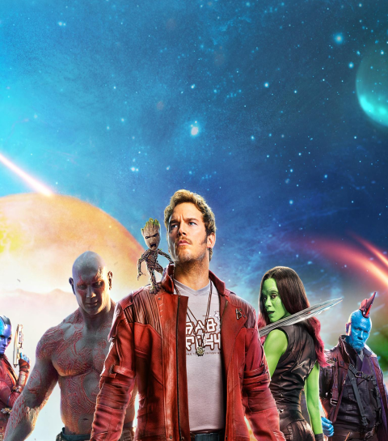

Awesome movie soundtracks can turn a good movie like Guardians Of The Galaxy or Star Wars into iconic ones.

.10
GUARDIANS OF THE GALAXY VOL. 2
While the Awesome Mix Vol. 1 in Guardians of the Galaxy was resonant with a lot of people,
it was the soundtrack in Guardians of the Galaxy Vol. 2 that improved on the formula.
The first film featured songs that were fun and upbeat but didn't have much to do with the film's story.
.09
JURASSIC PARK
John Williams did a lot of music for many popular franchises.
After his work on Star Wars, he would later do the score for Jurassic Park.
This dinosaur film was full of epic shots and tense moments that were further
brought to life by Williams' music.